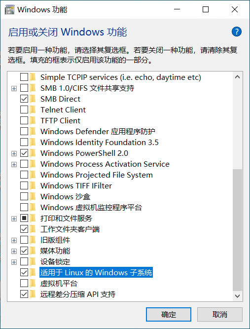
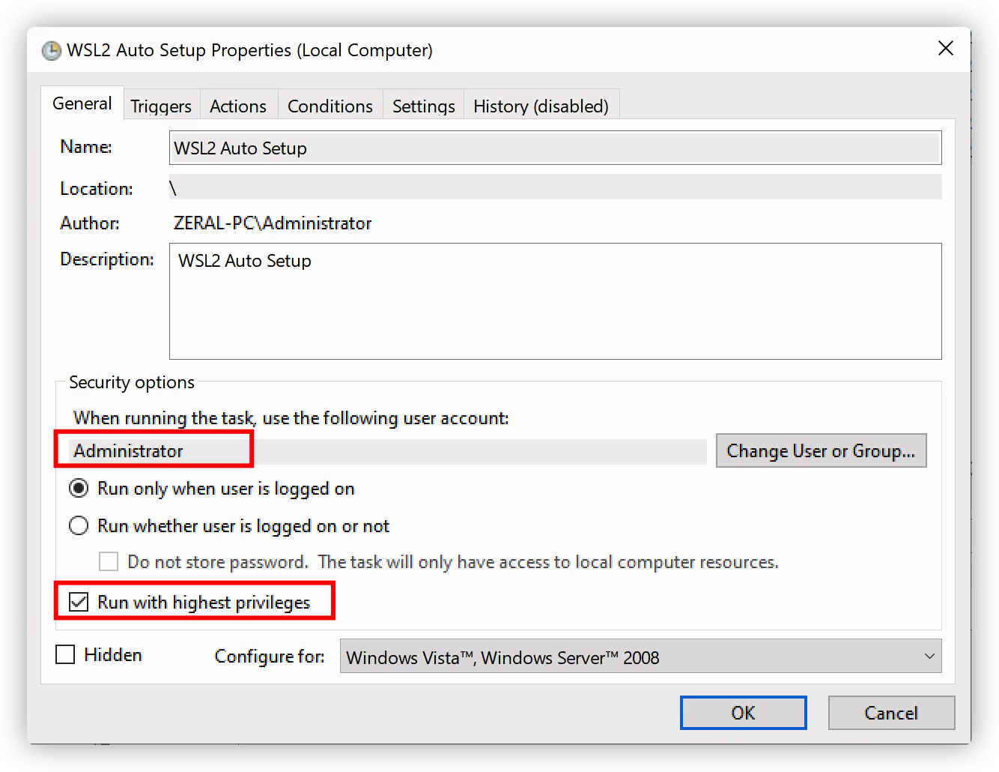
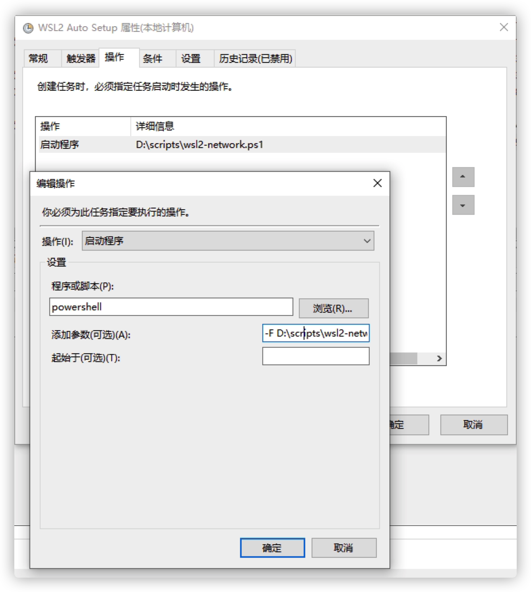

WSL2 使用指南
适用于 Windows 10 的子系统 Linux 安装指南
启用 Windows 子系统 Linux
在 Windows 上安装任何 Linux 发行版之前，您必须首先启用“Windows Subsystem for Linux/适用于Linux的Windows子系统”可选功能。

或者以管理员身份打开 PowerShell 并运行：
PowerShell复制
1 | dism.exe /online /enable-feature /featurename:Microsoft-Windows-Subsystem-Linux /all /norestart |
启用虚拟机功能
安装 WSL 2 之前，必须启用“Virtual Machine Platform/虚拟机平台”可选功能。 计算机需要虚拟化功能才能使用此功能。
以管理员身份打开 PowerShell 并运行：
PowerShell复制
1 | dism.exe /online /enable-feature /featurename:VirtualMachinePlatform /all /norestart |
重新启动 计算机，以完成 WSL 安装并更新到 WSL 2。
下载 Linux 内核更新包
-
下载最新包：
备注
如果使用的是 ARM64 计算机，请下载 ARM64 包。 如果不确定自己计算机的类型，请打开命令提示符或 PowerShell，并输入：
systeminfo | find "System Type"。 警告： 在非英语 Windows 版本中，你可能需要修改搜索文本，例如在德语中为systeminfo | find "Systemtyp"。 -
运行上一步中下载的更新包。 （双击以运行 - 系统将提示你提供提升的权限，选择“是”以批准此安装。）
安装完成后，请继续执行下一步 - 在安装新的 Linux 分发时，将 WSL 2 设置为默认版本。 （如果希望将新的 Linux 安装设置为 WSL 1，请跳过此步骤。）
将 WSL 2 设置为默认版本
打开 PowerShell，然后在安装新的 Linux 发行版时运行以下命令，将 WSL 2 设置为默认版本：
PowerShell 复制
1 | wsl --set-default-version 2 |
安装所选的 Linux 分发版
-
打开 Microsoft Store，并选择你偏好的 Linux 分发版。

单击以下链接会打开每个分发版的 Microsoft Store 页面：
-
在分发版的页面中，选择“获取”。


首次启动新安装的 Linux 分发版时，将打开一个控制台窗口，系统会要求你等待一分钟或两分钟，以便文件解压缩并存储到电脑上。 未来的所有启动时间应不到一秒。
然后，需要为新的 Linux 分发版创建用户帐户和密码。

祝贺你！现已成功安装并设置了与 Windows 操作系统完全集成的 Linux 分发！
配置 WSL2 Linux
配置 SSH 或 FTP
OpenSSH 介绍
OpenSSH 是一个强大的工具集合，用于远程控制联网计算机和在联网计算机之间传输数据。您还将了解一些可能使用 OpenSSH 服务器应用程序进行的配置设置以及如何在您的 Ubuntu 系统上更改它们。
OpenSSH 是安全外壳 (SSH) 协议系列工具的免费可用版本，用于远程控制计算机或在计算机之间传输文件。用于完成这些功能的传统工具，例如 telnet 或 rcp，是不安全的，并且在使用时以明文形式传输用户密码。OpenSSH 提供了一个服务器守护进程和客户端工具来促进安全、加密的远程控制和文件传输操作，有效地替代了传统工具。
OpenSSH 服务器组件 sshd - ssh daemon 持续侦听来自任何客户端工具的客户端连接。当发生连接请求时，sshd 会根据客户端工具连接的类型设置正确的连接。例如，如果远程计算机与 ssh 客户端应用程序连接，则 OpenSSH 服务器在身份验证后建立远程控制会话。如果远程用户使用 scp 连接到 OpenSSH 服务器，则 OpenSSH 服务器守护程序会在身份验证后在服务器和客户端之间启动文件的安全副本。OpenSSH 可以使用多种身份验证方法，包括普通密码、公钥和 Kerberos 票证。
安装
OpenSSH 客户端和服务器应用程序的安装很简单。要在 Ubuntu 系统上安装 OpenSSH 客户端应用程序，请在终端提示符下使用以下命令：
1 | sudo apt install openssh-client |
要安装 OpenSSH 服务器应用程序和相关支持文件，请在终端提示符下使用以下命令：
1 | sudo apt install openssh-server |
启动
1 | sudo service ssh start |
配置 SSH
您可以通过编辑文件来配置 OpenSSH 服务器应用程序 sshd 的默认行为/etc/ssh/sshd_config。有关此文件中使用的配置指令的信息，您可以使用在终端提示符下发出的以下命令查看相应的手册页：
1 | man sshd_config |
sshd 配置文件中有许多指令控制诸如通信设置和身份验证模式等内容。以下是可以通过编辑/etc/ssh/sshd_config文件更改的配置指令示例。
Tip
在编辑配置文件之前，您应该制作原始文件的副本并保护它不被写入，以便您将原始设置作为参考并在必要时重新使用。
/etc/ssh/sshd_config使用以下命令复制文件并防止写入，在终端提示符下发出：
2
sudo chmod a-w /etc/ssh/sshd_config.original
此外，由于丢失 ssh 服务器可能意味着无法访问服务器，请在更改配置后和重新启动服务器之前检查配置：
1 | sudo sshd -t -f /etc/ssh/sshd_config |
以下是您可以更改的配置指令示例：
- 要将 OpenSSH 设置为侦听 TCP 端口 2222 而不是默认的 TCP 端口 22，请将 Port 指令更改为：
Port 2222
- 要让您的 OpenSSH 服务器将
/etc/issue.net文件内容显示为登录前横幅，只需在/etc/ssh/sshd_config文件中添加或修改以下行：
Banner /etc/issue.net
- 要将监听地址设为所有，修改配置：
ListenAddress 0.0.0.0
- 如果想使用 SSH 密钥而不是密码进行身份验证，您还可以将
PasswordAuthentication设置为 “no”。如果您知道自己在做什么并且不知道如何使用 ssh 密钥，请将其设置为 “yes” 使用密码登录。
PasswordAuthentication yes
- 要将 root 用户配置为允许使用密码登录，默认的配置为
prohibit-password禁止密码登录。
PermitRootLogin yes
对/etc/ssh/sshd_config文件进行更改后，保存文件，然后在终端提示符下使用以下命令重新启动 sshd 服务器应用程序以使更改生效：
1 | sudo service ssh restart |
警告
sshd 的许多其他配置指令可用于更改服务器应用程序的行为以满足您的需要。但是，请注意，如果您访问服务器的唯一方法是 ssh，并且您在通过该
/etc/ssh/sshd_config文件配置 sshd 时出错，您可能会发现在重新启动服务器时您被锁定在服务器之外。此外，如果提供了不正确的配置指令，sshd 服务器可能会拒绝启动，因此在远程服务器上编辑此文件时要格外小心。
配置 FTP
sftp 是一个文件传输程序，类似于 ftp，它通过加密的 ssh 传输执行所有操作。它还可能使用 ssh 的许多功能，例如公钥认证和压缩。
OpenSSH 本身实现了 SFTP 客户端和服务，通过配置 /etc/ssh/sshd_config 来启用内置的 SFTP。
1 | #注释掉这行，使用内置的 internal-sftp |
如果需要为 sftp 单独设置用户组及配置，请参考：SFTP 安装与配置
SSH Keys
SSH 允许在不需要密码的情况下在两台主机之间进行身份验证。 SSH 密钥认证使用私钥和公钥。
如果本机没有密钥，要生成密钥，请从终端提示输入：
1 | ssh-keygen -t rsa |
这将使用 RSA 算法生成密钥。在撰写本文时，生成的密钥将有 3072 位。您可以使用该 -b 选项修改位数。例如，要生成 4096 位的密钥，您可以执行以下操作：
1 | ssh-keygen -t rsa -b 4096 |
在此过程中，系统将提示您输入密码。当提示创建密钥时，只需按 Enter键即可。
默认情况下，公钥保存到文件中~/.ssh/id_rsa.pub，同时~/.ssh/id_rsa是私钥。现在将id_rsa.pub文件复制到远程主机并通过输入将其附加到远程服务器的~/.ssh/authorized_keys：
1 | ssh-copy-id username@remotehost |
最后，仔细检查authorized_keys文件的权限，只有经过身份验证的用户才有读写权限。如果权限不正确，请通过以下方式更改它们：
1 | chmod 600 .ssh/authorized_keys |
您现在应该能够通过 SSH 连接到主机而不会被提示输入密码。
配置 WSL2 外部远程访问
如果需要从外部访问 WSL2 中的服务，则需要将 WSL2 中的端口转发到 windows 监听，并开启相应端口的防火墙设置。
获取 WSL2 IP
要进行转发，需要先获取 WSL2 的 IP 地址，可以在 windows 下使用 powershell 执行获取：
1 | wsl hostname -I |
配置端口转发
使用管理员权限的 powershell 执行 22 SSH/SFTP 端口转发，并设置监听任意 IP 访问：
1 | netsh interface portproxy add v4tov4 listenaddress=0.0.0.0 listenport=22 connectaddress=172.23.129.80 connectport=22 |
打开端口入站防火墙
接下来，在相同的管理员权限命令行下，打开入站防火墙端口。您可以从高级防火墙设置中执行此操作，但您可以再次使用 netsh 更轻松！
1 | netsh advfirewall firewall add rule name=”Open Port 22 for WSL2” dir=in action=allow protocol=TCP localport=22 |
如果您担心，可以像这样列出所有 portproxy 规则：
1 | netsh interface portproxy show v4tov4 |
如果需要，您可以将它们全部删除：
1 | netsh int portproxy reset all |
使用脚本自动化设置
由于 WSL2 重启或者 Windows 重启会导致其 IP 发生变化，使用自动化脚本完成更加方便。
脚本详见：WSL 2 TCP NETWORK FORWARDING
使用 Windows Task Scheduler/任务计划程序设置最高权限，设置启动或者登录自动触发脚本。

使用 powershell 执行该 psl 脚本：

配置 Linux
配置 Shell 为 Zsh
安装
具体参考：Installing ZSH
1 | apt install zsh |
Oh My Zsh 使你的命令行更加酷炫和便捷，也可以更便捷的管理 Zsh 配置，安装 Oh My Zsh：
1 | sh -c "$(curl -fsSL https://raw.githubusercontent.com/ohmyzsh/ohmyzsh/master/tools/install.sh)" |
如果出现：Failed to connect to raw.githubusercontent.com port 443: Connection refused，则代表你的 DNS 可能被污染，使用 VPN 或是配置 /etc/hosts 指明 ip 映射：
1 | 199.232.68.133 raw.githubusercontent.com |
配置 Oh My Zsh
默认的配置文件位于：~/.zshrc，你可以配置主题、插件、alias、PATH 等等，具体参考：https://github.com/ohmyzsh/ohmyzsh/wiki
参考链接：